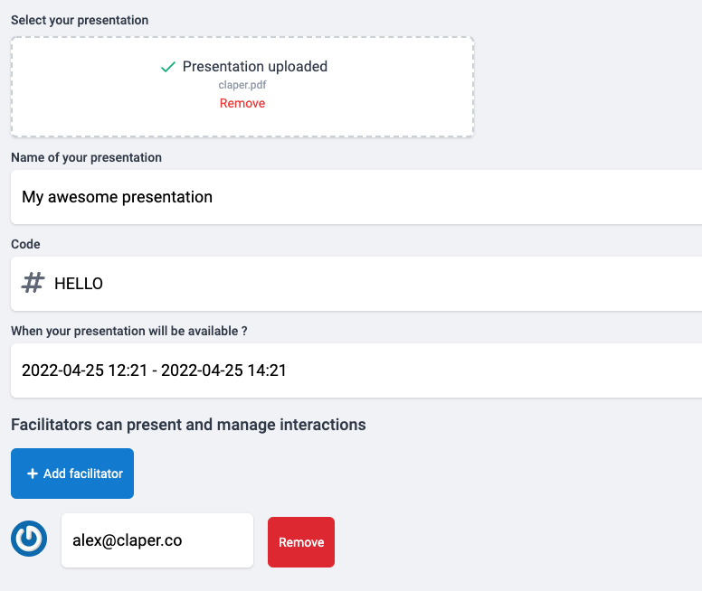
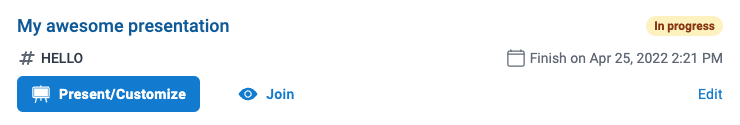
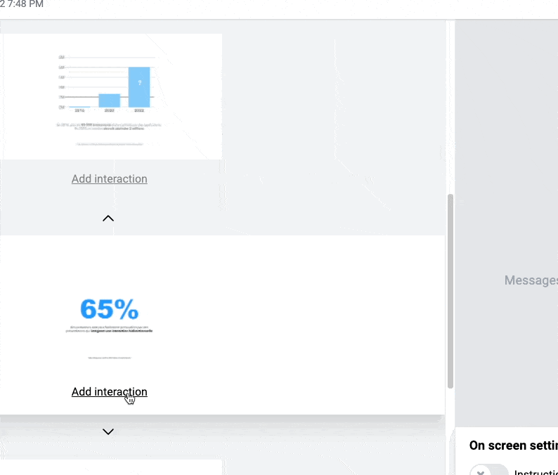
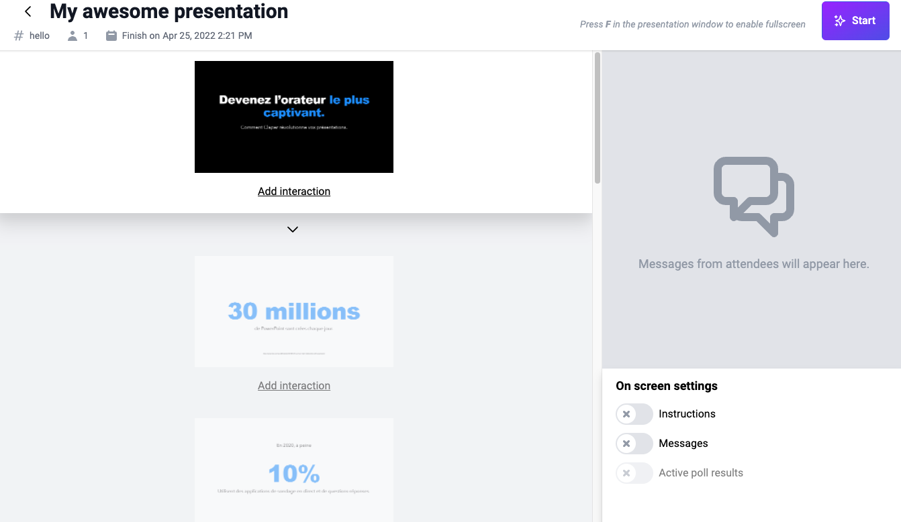

View Source How-to
preparations
Preparations
The first thing you need to have is your Powerpoint or Keynote presentation.
Do you plan to add a poll or ask questions?
Plan slides that will include interactions, for example for a poll, a slide with the title of your poll. Each interaction will be linked to a slide in your presentation.
When everything is ready, you must save/export your presentation in PDF or PPT/PPTX format. It is recommended to use PDF format, which will guarantee you a final rendering identical to the original.
You now have your exported presentation and ready to be imported into Claper.
using-claper
Using Claper
Log in to your Claper account and create a new presentation.
Upload your file then choose a name for your event, a code that will allow your attendees to join the event and a start and end date. Your attendees will not be able to join the event before the start date and will not be able to join it after the end date.
Note that at the end of your presentation, you will have access to your statistical report in order to know the engagement rate and other useful metrics.
Before saving, you can add facilitators with their email. They will only be able to moderate your presentation and project it. Your presentation will appear in their dashboard after they log in.
The first step is finished, wait a few minutes for your file to be processed.
It's time to add interactions!
You can add interactions during your presentation or prepare them ahead of time.
Click on Present/Customize, you will find all the slides of your presentation.
Below each slide, you can add interactions that will be available when the slide is active.
In the right side you will have access to all posts, which is useful for moderators who can moderate posts by deleting them or banning disruptive attendees.
At the bottom right you will be able to view the instructions with the QR to join your meeting, it's best to activate it at the beginning of the presentation before you start talking.
You also have the option to display messages from your attendees and the result of the current poll.
presenting
Presenting
You are finally ready to start!
That's what the Start button in the top right corner is for. This will open a new window that will be used during your presentation.
To go into full screen mode, press the F key.
To control your presentation, use the moderation screen, you can also control your presentation on your phone if you are logged in with your account.
You are finally ready to interact effectively with your audience!